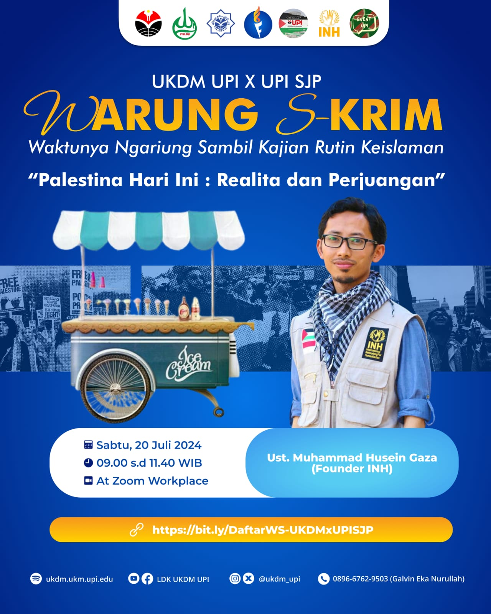
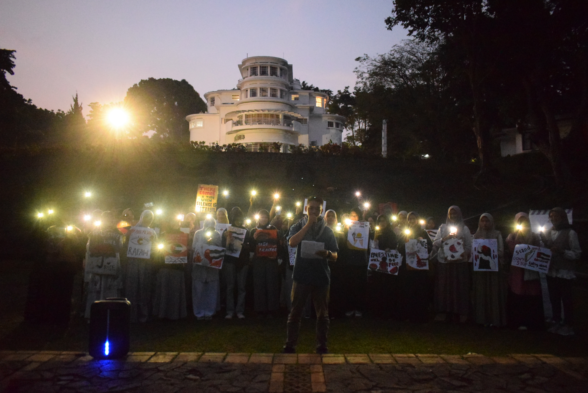
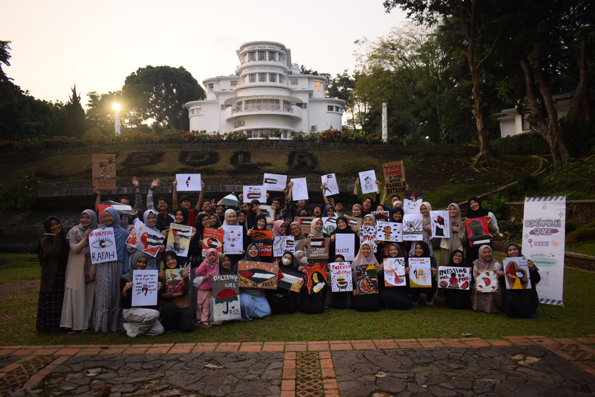
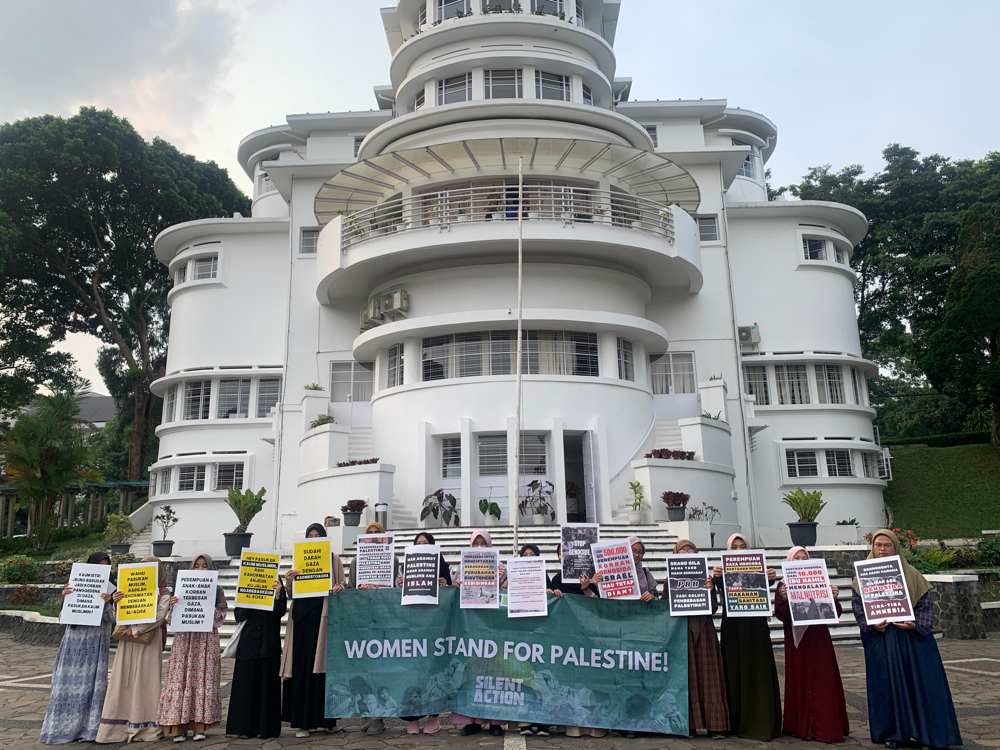

UPI SJP
UPI SJPAgenda UPI SJP
Warung Skrim, Palestina Hari Ini : Realita dan Perjuangan
LDK UKDM UPI berkolaborasi dengan UPI Students for Justice in Palestine menyelenggarakan kajian seputar Palestina yang menghadirkan Ustadz Muhammad Husein Gaza (Founder International Networking for Humanitarian) yang akan dilaksanakan pada :
Sabtu, 20 Juli 202409.00 s.d. 11.40 WIB
Zoom Workplace
Ayo ikutin kajian ini, GRATIS & TERBUKA UNTUK UMUM dengan mendaftar di link berikut.
Daftar Warung SkrimAksi Jawa Barat Melawan Zionis

Genosida telah disiarkan langsung selama 24 jam 244 hari. Setiap hari, kita melihat aksi teror baru yang semakin biadab. Korban yang gugur di bawah bombardir zionis israel telah menyentuh 46.000 jiwa, hanya 36.000 jiwa lebih yang tercatat di Rumah Sakit. Koalisi Jawa Barat Selamatkan Palestina melaksanakan Aksi Jawa Barat Melawan Zionis pada :
Sabtu, 8 Juni 202407.00 s.d. 12.00 WIB
Depan Gedung DPRD Jawa Barat
UPI SJP juga turut hadir dalam aksi ini beserta SJP dari kampus lainnya yang ada di sekitar Bandung Raya. Rangkaian kegiatan dalam aksi ini yaitu long march dari Pusdai menuju Depan Gedung DPRD dengan rute yang telah ditentukan, orasi dari para tokoh, musik oleh Shoutul Harakah, doa bersama, dan penggalangan donasi melalui KNRP.
1001 Light for Palestine
Bombardir yang dilakukan oleh Israel ke kamp pengungsian Rafah tentu membuka mata setiap orang untuk terus melangitkan doa bagi Palestina. Cahaya sebagai simbol harapan dan juga kemenangan yang akan terus menyertai semangat perjuangan bagi bangsa Palestina. UPI Students for Justice in Palestine melaksanakan aksi 1001 cahaya untuk palestina pada :
Jumat, 7 Juni 202417.00 s.d. 17.30 WIB
Taman Baretti UPI Bandung
Aksi simbolis ini dilaksanakan setelah kegiatan Draw for Palestine berisi rangkaian doa bersama untuk Palestina yang dilatarbelakangi oleh massa aksi yang menyalakan blitz dari handphone mereka. Dalam aksi ini juga dibacakan dukungan dan ajakan partisipasi untuk turun ke lapangan pada Aksi Jawa Barat Melawan Zionis yang dapat dibaca pada tombol berikut ini.
Dukungan UPI SJP Terhadap Aksi Jawa Barat Melawan ZionisDraw for Palestine
Dukungan untuk Palestina tentu bisa dilakukan dalam berbagai kegiatan, salah satunya yaitu melalui aktivitas kreatif menggambar dan melukis. Bertumbuh Space merupakan komunitas yang mewadahi mahasiswa dan mahasiswi untuk terus bertumbuh menebarkan manfaat, kali ini komunitas Bertumbuh Space berkolaborasi dengan UPI Event dan UPI SJP melaksanakan kegiatan Draw for Palestine pada :
Jumat, 7 Juni 202416.00 s.d. 17.00 WIB
Taman Baretti UPI Bandung
Kegiatan ini antusias diikuti oleh mahasiswa dan mahasiswi. Menggambar dan melukis membuat poster dengan sangat kreatif sebagai upaya untuk menyuarakan dukungan bagi Palestina. Poster tersebut nantinya akan digunakan untuk Aksi Jawa Barat Melawan Zionis.
Silent Action : Aksi Perempuan Untuk Palestina
Perempuan adalah tonggak peradaban, maka suara perempuan hendaknya terus digemakan terutama untuk terus mendukung upaya kemerdekaan Palestina. Banyaknya korban-korban genosida oleh Israel terutama perempuan yang menjadi semangat kita untuk terus berjuang menyuarakan kemanusiaan. KALAM UPI berkolaborasi bersama UPI Students for Justice in Palestine mengadakan silent action pada :
Rabu, 22 Mei 202416.00 s.d. 17.30 WIB
Titik Kumpul Gedung PKM UPI
Aksi ini dilaksanakan dalam bentuk track keliling UPI tanpa orasi dengan membawa poster maupun tulisan-tulisan yang menyatakan dukungan untuk Palestina, diikuti oleh seluruh mahasiswi.
Aksi 76 Tahun Peringatan Nakba

Hari Nakba merupakan peristiwa yang menyimpan sejarah kelam bagi bangsa Palestina dengan terusirnya kurang lebih 750.000 orang dari kampung halaman mereka, serta menjadi cikal bakal malapetaka yang terjadi bagi bangsa Palestina oleh Israel. UPI Students for Justice in Palestine mengadakan aksi pada :
Rabu, 15 Mei 202416.00 s.d. 17.45 WIB
Taman Baretti UPI Bandung
Dalam momen tersebut dihadiri oleh seluruh sivitas akademika UPI yakni mahasiswa, dosen, dan juga alumni. Kegiatan ini menjadi awal gerakan UPI SJP untuk bersuara atas rasa kemanusiaan yang menimpa saudara-saudara kita di Palestina. Rangkaian kegiatan ini berisi mimbar bebas, mozaik bendera Palestina, doa bersama, dan penggalangan donasi. Turut hadir pula berbagai awak media yang meliput aksi ini. Terdapat press release yang dikeluarkan dalam aksi ini, dapat dilihat pada tombol berikut.
Press Release Aksi 76 Tahun Peringatan Nakba